Fifteen chapters, tagged by who they're for. Pick your role below and watch the playbook narrow to just your part, the same filtering the finished site will use for real.
The first five are the parties the steel passes between. Local authority sits across that chain rather than in it: it consents what the other five do.